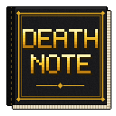
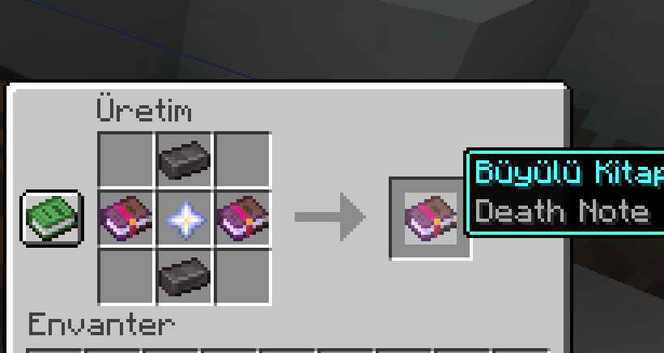
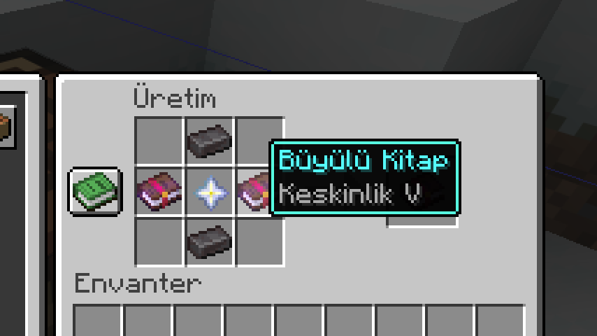
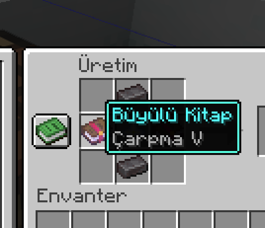
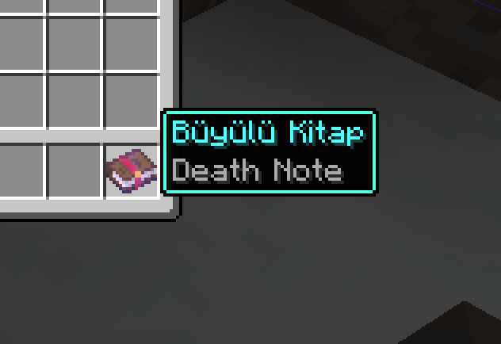
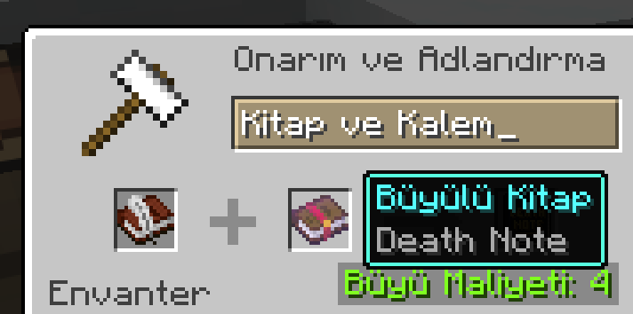
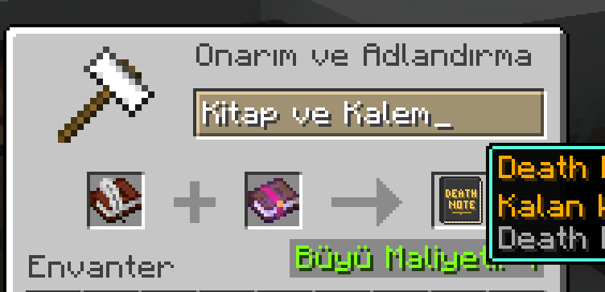
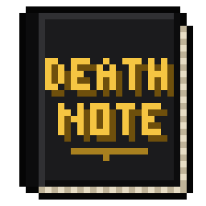
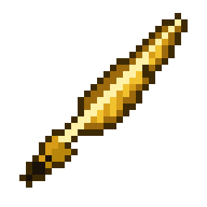

Büyü kitabını üret
Çalışma masasında ortaya Nether Yıldızı, üstüne ve altına birer netherit külçesi, iki yanına Keskinlik V ve Çarpma V büyü kitaplarını koy.
Tüylere ve kitaplara Death Note büyüsü ekler. Bir oyuncunun adını yaz ve onu yere ser.

Death Note, Minecraft 26.2 için bir Fabric modu. Yeni bir eşya eklemez; sıradan bir tüyü ya da Kitap ve Kalem'i Death Note büyüsüyle altın bir kaleme veya siyah bir deftere dönüştürür. Eşyaya sağ tıklayıp çevrimiçi bir oyuncunun adını yazdığında gökten bir şimşek iner ve o oyuncu anında ölür.
Çalışma masasında ortaya Nether Yıldızı, üstüne ve altına birer netherit külçesi, iki yanına Keskinlik V ve Çarpma V büyü kitaplarını koy.
Death Note büyü kitabını örste bir tüyle ya da Kitap ve Kalem ile birleştir. Tüy altın Death Note Kalemi'ne, kitap siyah Death Note defterine dönüşür.
Death Note'a sağ tıklayınca isim ekranı açılır. Çevrimiçi bir oyuncunun adını yazarsın; gökten bir şimşek iner ve oyuncu ölür. Şimşek sadece görseldir, yangın çıkarmaz.
Zırh, kalkan, iksirler, Ölümsüzlük Totemi ve yaratıcı mod işe yaramaz. Sohbette oyuncunun Death Note tarafından öldürüldüğü yazar.
Her kullanım 30 seviye XP ister ve kullanımlar arasında 10 saniye beklemen gerekir. Death Note 30 kullanımdan sonra parçalanır. Oyuncu bulunamazsa hiçbir şey harcanmaz.
Sunucu sahipleri config/deathnote.json dosyasından XP bedelini, kullanım sayısını, bekleme süresini, kendi adını yazmayı ve operatörlerin korunmasını değiştirebilir.








İpucu: MehburMC Launcher ile Fabric profilini tek tıkla kurabilir, modları Mod Toggle ile açıp kapatabilirsin. Launcher'a göz at →
İndirdiğin dosyanın benim yayınladığımla birebir aynı olduğunu kontrol etmek için dosyanın bulunduğu klasörde PowerShell'i açıp şu komutu çalıştır:
Get-FileHash .\deathnote-1.0.0.jar -Algorithm SHA256Çıkan SHA-256 değeri bununla aynı olmalı:
f7e77da6b6fa054955c5828de9addaad49c31c511b18709d18d3f9aae9484ff6